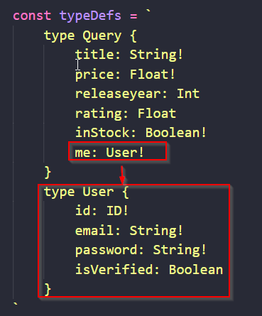

This how we setup a custom type in graphQL i.e. in typeDefs and then pass it to the query to select the necessary fields.
Now in your resolvers make something similar to the other function call and pass the js object that needs to be retuned